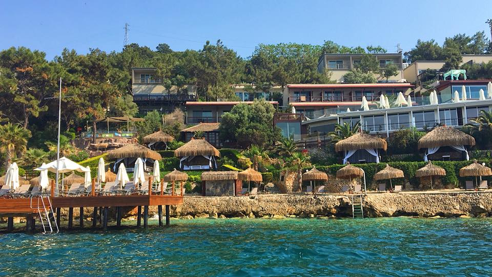

There’s no other place like Singapore. Located just off the southern tip of Malaysia,
this vibrant city-state boasts a beautiful blend of Malaysian, Indian, Chinese, Arab and English cultures – all with its own Singaporean twist.
The “Lion City,” as it's referred to, is filled with delightful culinary experiences,
state-of-the-art accommodations and exciting nightlife. My ultimate Singapore travel guide is filled with travel tips to help you plan your own trip!
Ubud in Bali.
What To Expect In Singapore
Singapore, being one of the most prominent cities in the world, will provide you with a different kind of
experience from the one you could expect in other Asian countries.
Language: Most locals are bilingual – proficient in English and either Mandarin, Malay or Tamil.
Sitting on the edge of the Islamic world and the European Union, visiting Turkey is one of the easiest, safest, and most fascinating ways to explore the Islamic culture. Between the incredible food, the richness of history in Istanbul, the hot air balloon rides over Cappadocia, and the stunning mosques, it’s no wonder that Turkey is the 6th most visited destination in the entire world!
Despite the unrest that the country went through within the last few years with Syria, Turkey is not only a safe destination but also one that I believe everyone should experience once in their life.

The view to my hotel.
What To Expect In Turkey
For ideal weather, visit during the spring months. The days are long, and the heat hasn’t quite hit yet. Because the temperatures are almost perfect, this is high season for cities like Istanbul and Cappadocia.
Expect fully booked hotels and high prices. However, it is offseason for the beach resorts.
Fall is also a wonderful time to visit. The days are shorter, and there is a higher chance of rain come October, but the weather overall is very mild. Cities are extremely busy, and the beaches are quiet, making it a great time to visit the coast.
Language: The official language of Turkey is Turkish. However, you will also find that Kurmanji, Arabic, and Zazaki are also widely spoken.
Thailand is always welcoming, despite receiving hordes of tourists all year-round.
Thailand’s majestic temples pull you in, and you can’t help but be drawn to the history of it all. Thailand’s pristine and turquoise waters are magical, warm and incredibly photogenic which add the perfect touch to a dream holiday.
The best time to visit Thailand is in the dry season. From November to April, temperatures are cooler and you can expect picture-perfect days for outdoor activities.
The only downside is that it’s also Thailand’s peak tourist season. Flights and accommodation prices increase and the beaches on Phuket and Krabi will be full of people.
The boat we took to the Phi Phi Island.
What To Expect In Thailand
I consider Thailand to be one of the safest destinations for solo female travelers.
While you still need to be aware of your surroundings, petty theft and tourist scams are usually the biggest things you need to watch out for.
Language: The official language in Thailand is Thai.